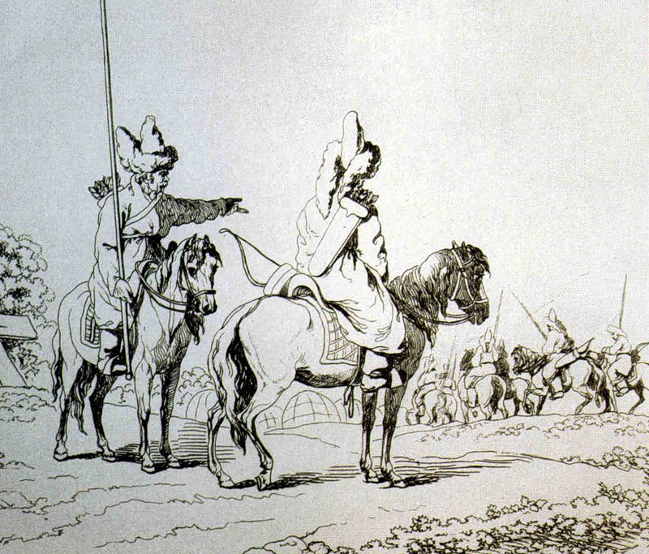
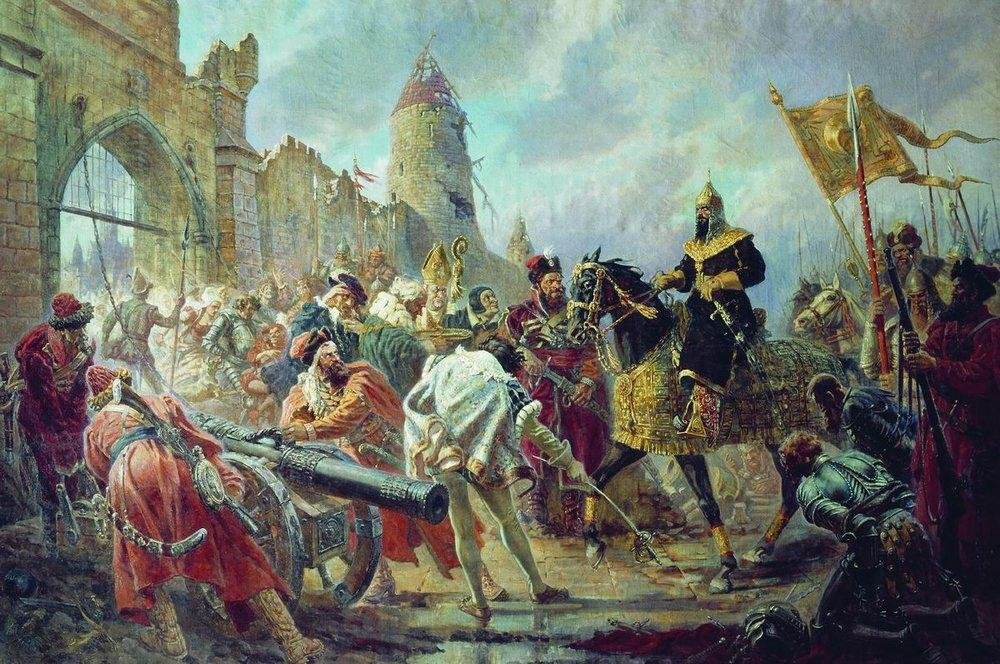

Причины разделение Золотой орды. Наступил XVI век, Золотая Орда разделилась на новые ханства. Исторический Башкорстан разделили между собой Ногайская Орда, Казанское и Сибирское ханства. Мы не можем пройти стороной события, произошедшие между разделённой Золотой Орды (к тому времени такого понятия, как "Золотая Орда" уже не существовало).
Почему распалась империя Чингисхана? Борьба за власть погубила Золотую Орду, ведь каждый потомок (их было не мало!) хотел получить свою часть империи. Вот она и разделилась на части. Первая причина: oбщего правителя не было.
Во-вторых, территория, которую контролирова Золотая Орда, готова была пойти на восстание, а междоусобные войны среди наследников мешали их подавлению. Это вторая причина: неспособность контролировать территории.
Есть и другие причины распада империи, но обсуждать их смысла большого нет.
Ослаблением Золотой Орды воспользовалась Россия, которая долгое время выплачивала дань монголам. Надо сказать, что тогдашняя Россия также была раздроблена, также были междоусобные войны между русскими князьями. Ранее, при Дмитрии Донским, нанёсшим поражение монголо-татарам, была попытка выйти из под «опеки» татар, но и дальше Русское княжество была под татаро-монгольским игом.
Через 100 лет, на престол взошёл Иван III. В 1476 году он перестал платить дань монголам.
Красивая, но неправдивая легенда рассказывает, как это произошло. Приняв Ордынское посольство, великий князь растоптал басму и отправил в Орду предупреждение, что с ними такое же случится, если не оставят в покое его страну. Разъяренный хан Ахмед, собрав большое войско, двинулся на Москву, желая ее покарать за непослушание. Примерно в 150 км от Москвы у реки Угры на калужских землях осенью стали напротив два войска. Русское возглавлял сын Василия, Иван Молодой. Иван III вернулся в Москву и стал осуществлять поставки для армии – продовольствие, фураж. Так и стояли войска напротив друг друга, пока не подошла ранняя зима с бескормицей и не похоронила все планы Ахмеда. Монголы развернулись и ушли в Орду, признав поражение. Так бескровно произошло окончание монголо-татарского ига.
Присоединение к России. Наступил 1452 год, 100-тысячное войско Российского Царства под предводительсвом своего царя Ивана IV (из истории Грозного) разгромило Казанское ханство. Следующей целью царя были башкиры. Именно к ним он отправил послов после взятия татарской столицы. Башкирам было предложено добровольно войти в состав Российского Царства. «Платите мне то же, что вы платили монгольским ханам», - по данным летописи, сказал Иван IV. Вожди 7 башкирских племён, потом и остальные, приняли предложение царя, но поставили ему условие:«Не трогать вотчинную землю (т. е. наследственную землю), местное самоуправление (т. е. власть вождей) и религию». Иван IV принял условие и башкирские земли вошли в состав Российского царства. Хочется заметить, что все условия башкир Аҡ-патша («Белый царь» - так называли Ивана IV башкиры) выполнил: никто на башкирскую землю кроме государственных наместников не заселялся, вожди сохранили свою власть (также некоторые из них были пожалованы в князья) и религия, которая за века монгольского ига стала исламом, сохранилась. Последнее немало важно, ведь многих казанских татар насильно крестили.
Культура. На самом деле, нахождение под контролем монголо-татар для башкир стало развитием их культуры. Об этом говорит прежде всего распространение арабской письменности. Но не это самое важное в культурном развитии, самое важное - у башкирского народа появилась своя письменность, возникновение свой письменной истории. Также продолжалась развиваться самобытная художественная литература, отличительной особенностью которой является традиционные жанры устного народного творчества: эпосы, легенды, песни. Многие из них («Урал Батыр», «Акбузат») возникли в глубокой древности, некоторые в золотоордынские времена («Кузый Курпяс и Маянхылу», «Алдар и Зухра»).
Вывод. В период XIV-XV веков деление по племенам среди башкир всё меньше выражалось, все исторические события сподвигли башкирский народ к объединению и единствую